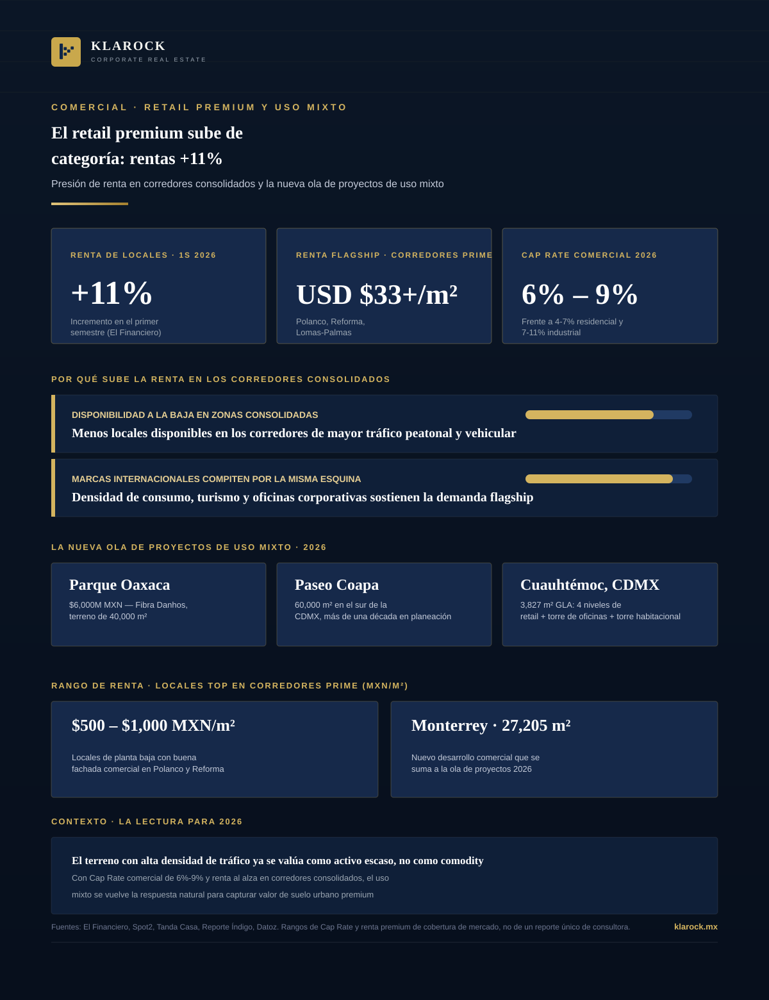

Comercial · 2026-09-03
Las rentas de locales comerciales subieron 11% en el primer semestre de 2026, según El Financiero, con los corredores más consolidados —Polanco, Reforma, Masaryk— a la cabeza. Al mismo tiempo, una nueva generación de proyectos de uso mixto compite por capturar el valor del terreno de alto tráfico.

El retail mexicano entró a la segunda mitad de 2026 con una señal clara: la renta ya no es el terreno de negociación que era hace tres años. El Financiero reportó un incremento de 11% en las rentas de locales comerciales durante el primer semestre, impulsado por una combinación que ya es estructural —menor disponibilidad en zonas consolidadas y marcas internacionales dispuestas a pagar más por la misma esquina.
Con un Cap Rate comercial que se mueve entre 6% y 9% —por encima del residencial (4%-7%) y por debajo del industrial (7%-11%)— el segmento comercial ocupa un punto medio que hoy se vuelve más atractivo por la combinación de renta al alza y disponibilidad a la baja en los corredores de mejor tráfico. La pregunta relevante para 2026 ya no es si conviene invertir en retail premium, sino si el terreno específico tiene la densidad de tráfico que sostiene ese repricing, o si el capital debe migrar hacia el uso mixto para capturar valor adicional del mismo suelo.
En Klarock identificamos terrenos y locales comerciales en corredores de alta densidad de tráfico, evaluando tanto el activo de renta consolidada como la oportunidad de reposicionamiento hacia uso mixto.
Escríbenos y un socio director te contactará en menos de 24 horas hábiles.
Contactar a un Socio Director